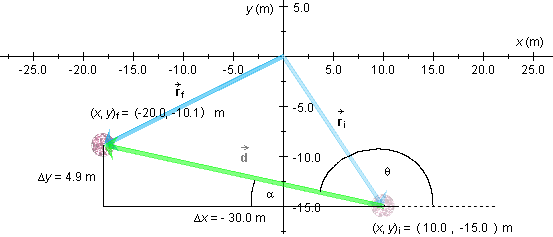
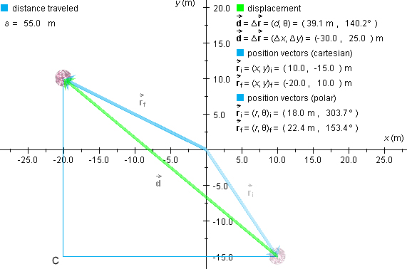
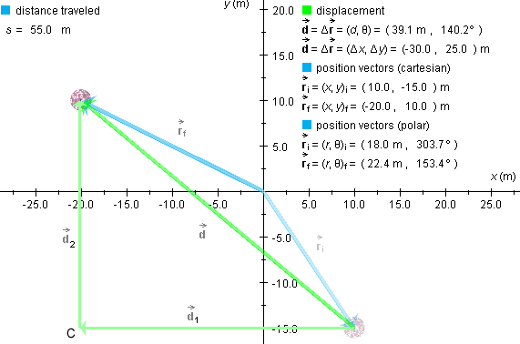

Prerequisite
Students should have a working knowledge of vectors.
Learning Outcomes
Students will develop an understanding of the physics concepts of displacement and distance traveled and of the distinction between vector and scalar quantities and will gain experience in working with vectors.
Instructions
The applet should be open. The step-by-step instructions in this lesson are to be carried out in the applet. You may need to toggle back and forth between instructions and applet if your screen space is limited. You should be prepared to do calculations to verify the numbers that are generated by the applet.
Qualitatively speaking,
displacement is a change in position.
Reset the applet, position the ball at (x,y)i = (10.0,-15.0) m, and then drag the ball along some curved path to somewhere near (x,y)f = (-20.0,-10.0) m. (It may be hard to stop at exactly the same final position.) You may want to try dragging the ball along a curved path similar to the blue path shown in Figure 1 below.
Figure 1
If you moved the ball from (x,y)i = (10.0,-15.0) m to somewhere near (x,y)f = (-20.0,-10.1) m, the applet should display a green displacement vector similar to the one in Figure 1. This vector is a measure of how the ball's position has changed.
Quantitatively, if a particle undergoes a motion, the particle's
displacement is the vector that points from the initial to the final position of the particle, regardless of the path on which the particle moved from the initial to the final position.
Displacement is a vector quantity whose magnitude
(absolute value) is equal to the straight-line distance from the
initial to the final position (represented by the length of the
green arrow in Figure 1) and whose direction coincides with the
direction from the initial to the final position (measured here by
the angle q between the green arrow and
the positive x-axis. The symbol for displacement is  . When writing the symbol by hand, make
sure you include the arrow over the letter "d".
. When writing the symbol by hand, make
sure you include the arrow over the letter "d".
In the present case, the magnitude d of the displacement and the angle q have the values
d = 30.4 m  and
and  q = 170.7o.
q = 170.7o.  (1)
(1)
These values are displayed in the first line under "displacement" in Figure 1.

Question. How does one calculate the values given in Equations (1) above, given the initial and final positions
(x,y)i = (10.0,-15.0) m
 and
and  (x,y)f =
(-20.0,-10.1) m?
(x,y)f =
(-20.0,-10.1) m?  (2)
(2)
Answer. It is best to start by drawing a diagram with all relevant quantities, a diagram like that in Figure 2 below.

Figure 2
The displacement vector has an x-component (displacement along the x-axis) equal to
Dx =
xf - xi = -20.0 - 10.0 = -30.0 m
 (3)
(3)
and a y-component of displacement (displacement along the y-axis) equal to
Dy =
yf - yi = -10.1 - (-15.0) = 4.9
m.  (4)
(4)
Since the triangle formed by these two components and the vector itself is a right triangle, with the vector forming the hypotenuse, the Pythagorean theorem gives
d2 = (Dx)2 + (Dy)2 = (-30.0)2 +
4.92 = 924.0 m2.  (5)
(5)
Taking the square root, gives for the magnitude of the displacement the value
d = 30.4 m.  (6)
(6)
To calculate the direction angle q that measures the direction of the displacement relative to the positive x-axis, we first calculate its complement a. See Figure 2. A diagram like this is essential for calculating q.
From basic trigonometry, we get
sin a = |(Dy|/d = 4.9/30.0 = 0.1633  (7)
(7)
a = 9.28o
 and
and  q = 180o - a = 180 - 9.28 = 170.7o.
q = 180o - a = 180 - 9.28 = 170.7o.  (8)
(8)
Note. When asked to calculate a displacement, it is not sufficient to calculate only the magnitude, as in result (6). Displacement is a vector, and its magnitude is not the entire story. A vector's direction is just as important. Thus, only results (6) and (8) together provide a complete answer to what the displacement is.
The distance traveled by the ball is defined as the length of the actual path traveled by the ball. If you place a string on the blue path in Figure 1 and measure its length, you get a measure of the distance traveled by the ball.
Distance traveled is often (and here) denoted by the symbol s.
Figure 1 under "distance traveled" displays the value of s as 33.6 m. Compare this to the magnitude d of the displacement, which is 30.0 m. In general, the distance traveled will be greater than the magnitude of the displacement. The two will be equal only when the path taken is a straight line and when the path is traversed in a single direction. (No backtracking!)
The value of s depends on the exact shape of the path connecting two given positions. If one has an equation describing the shape of the path, s can be calculated using integral calculus.
Note. Distance traveled, like the distance between two points, is a scalar quantity, in contrast to displacement which is a vector quantity.
Displacements are vectors and can therefore be added. Let us
calculate the total displacement
resulting from carrying out two successive displacements 1 and 2. Carrying out two displacements in
succession is represented mathematically by adding the corresponding
vectors.
If the applet is still set with the ball's initial position at (x,y)i = (10.0,-15.0) m, press the Replay button. That will put the ball back at this initial position. Otherwise, click Reset and then position the ball at (x,y)i = (10.0,-15.0) m.
Now press down the Shift key, and while still holding it down,
click on the ball and drag it left horizontally to
(x,y)C = (-20.0,-15.0) m, or close to this
point, and release the mouse button. (It may not be easy to get it
to exactly this point, which does not matter.) This is the first
displacement, 1.
Again, press down the Shift key, and while still holding it down,
drag the ball straight up from (x,y)C =
(-20.0,-15.0) m to (x,y)f = (-20.0,10.0) m.
This is the second displacement, 2. If you also display the position
vectors and extra data, you should see something like the snapshot
in Figure 3 below.

Figure 3
Figure 3 shows the intermediate point C, but not the two displacement vectors d1 and d2. They are shown in the following Figure 4.

Figure 4
Question. How do we calculate the magnitude d of
the total displacement ?
Note that d is not equal to the sum
d1 + d2 = 30.0 + 25.0 = 55.0 m
of the magnitudes of the individual displacements 1 and 2! This sum would be the total distance
traveled s. See the value of s displayed in both
Figures 3 and 4.
So how do we find the magnitude d of the total displacement?
Answer. The three displacements in this case form a right-angle triangle, with the resultant displacement being the hypotenuse of the triangle. Therefore, by the Pythagorean theorem,
d2 =
d12 + d22
= 30.02 + 25.02 = 1525 m2.  (9)
(9)
Taking the square root gives
d = 39.1 m .  (10)
(10)
This is quite a bit less than the distance traveled or the sum of the magnitudes of the individual displacements!
Question. By obtaining result (10), have we calculated the total displacement?
No! We still must calculate the direction of the
displacement , which we take to be
measured by the angle q between the total
displacement and the positive x-axis. The calculation is
analogous to that leading to the earlier result (8). As an exercise
for you, repeat the steps leading to result (8) in the present case.
You should obtain the value q =
140.2o displayed in both Figures 3 and 4.
At the beginning of this lesson, displacements were characterized qualitatively as changes in position. This concept can be quantified in terms of the concept of position vector.
The diagram in Figure 1 is displayed once more in Figure 5 below.
Figure 5
The diagram shows two position vectors, the position vector  i pointing from the origin to
the ball's initial position and the position vector f pointing from the origin to the ball's
final position. A position vector is a displacement vector pointing
from the origin to some given position.
i pointing from the origin to
the ball's initial position and the position vector f pointing from the origin to the ball's
final position. A position vector is a displacement vector pointing
from the origin to some given position.
A change in temperature is the difference between the new and the old temperature. Similarly, a change in position, i.e., a displacement, is the difference between the final and initial position vectors,
= f - i .  (11)
(11)
That this statement is true can be seen from Figure 5. Recall
that the difference between two vectors, say, f - i, can be constructed graphically by
joining the two vectors tail-to-tail and drawing the difference
vector from the tip of i
to the tip of f. This is
just the displacement vector in Figure 5.
Let us check if Equation (11) gives indeed the right displacement. For this it is by far easier to work with (x,y)-components than with magnitudes and directions.
The (x,y)-components of a position vector are equal
to the (x,y)-coordinates of its tip. Check this for
the (x,y)-components of i and f listed under "displacement" in Figure 5.
To subtract the two vectors, you must subtract their
(x,y) components. Thus,
Dx =
xf - xi = -20.0 - 10.0 = -30.0 m
 (12)
(12)
Dy =
yf - yi = -10.1 - (-15.0) = 4.9 m.
 (13)
(13)
These are indeed the x and y components of the
displacement vector , as displayed in
the second row under "displacement" in Figure 5.